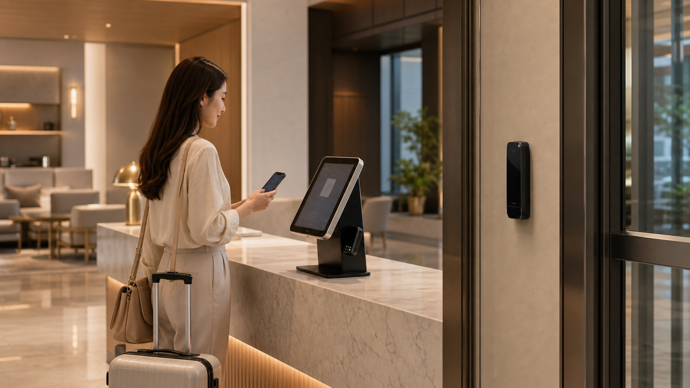
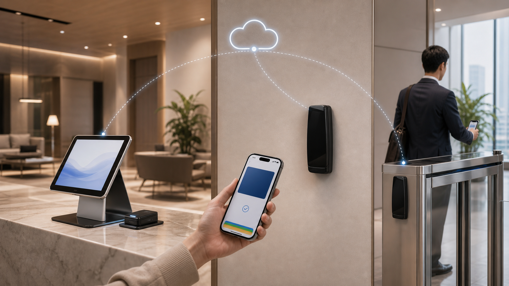
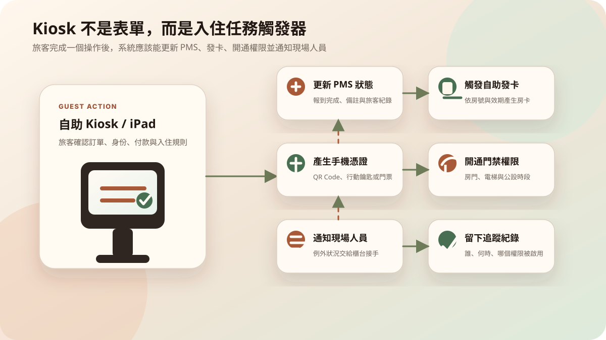

旅客走進飯店大廳，看到一台自助 Kiosk 或一台 iPad 自助櫃檯，可能會以為它只是把櫃台表單搬到螢幕上。但真正好的自助入住，不是多一個輸入資料的畫面，而是讓 PMS 裡的訂單資料，可以一路接到現場報到、發卡、手機憑證與門禁權限。
換句話說，PMS 是資料核心，Kiosk 是旅客入口。兩者之間如果沒有接好，旅客就會遇到很熟悉的挫折：明明線上填過資料，現場還要再填一次；明明完成付款，櫃台還要重新確認；明明拿到 QR Code，卻不知道能不能開門。
PMS 是資料核心，Kiosk 是旅客入口

PMS 裡保存的不是抽象資料，而是旅客能不能順利入住的關鍵條件：訂單是否存在、入住日期是否正確、房型與房號是否已分配、付款或押金是否完成、房務狀態是否可以入住。
Kiosk 則是把這些資料變成旅客可以操作的入口。它可以讓旅客確認訂單、補齊資料、閱讀入住規則、確認抵達資訊，也可以觸發後續的發卡、QR Code、手機憑證或門禁權限。
如果 PMS 和 Kiosk 沒有串接，Kiosk 只是另一個孤立螢幕；如果兩者串起來，Kiosk 就會變成旅客抵達現場時的任務節點。
一次自助報到，背後至少有 5 種資料在流動

一個看似簡單的自助報到，背後通常會牽涉至少五種資料。
- 訂單資料：姓名、訂單號、入住日期、房型、人數。
- 房務資料：房間是否已清潔、是否可入住、是否需要換房。
- 付款資料：房費、押金、預授權、加購項目。
- 身份資料：證件、電話、Email、入住同意條款。
- 通行資料：房號、房卡、QR Code、手機金鑰、門禁權限。
Kiosk 的價值，不是把這些資料全部丟給旅客重新填，而是把 PMS 已經知道的內容帶出來，讓旅客確認、補齊和觸發下一步。這樣自助入住才會真的縮短流程，而不是把櫃台工作轉嫁給旅客。
API 是資料通道，邊緣設備是現場執行點

PMS 與 Kiosk 之間需要 API，讓訂單、房號、入住時間與旅客狀態可以被安全讀取與更新。但旅宿現場不能只靠雲端畫面，因為最後真的要執行的是現場任務：發卡、啟用權限、開門、通知櫃台或房務。
這也是 Cellbedell 架構的重點。Kiosk / iPad 自助櫃檯是旅客互動入口，自助發卡機與門禁設備是現場執行點，邊緣運算硬體則負責在現場完成必要判斷。PMS 透過 API 把資料送進來後，設備可以依照權限直接發卡、產生通行憑證，或完成進門判斷。
雲端負責同步、紀錄與管理；現場設備負責關鍵執行。這種分工，讓智慧入住不會只停留在「看起來很科技」的介面，而是能在真實旅宿營運裡穩定作動。
Kiosk 應該觸發任務，而不是只收資料

如果 Kiosk 只是讓旅客填資料，那它的價值很有限。真正有用的 Kiosk，應該可以把旅客操作轉成任務。
例如旅客完成身份確認後，系統可以更新 PMS 狀態；確認付款後，可以觸發發卡或手機憑證；旅客表示晚到，可以建立備註並通知夜班人員；旅客無法完成某一步，則可以把狀態交給櫃台接手。
這些任務要能被追蹤。誰完成了報到？哪一張房卡被發出？哪一組 QR Code 何時失效？哪一個步驟需要人工協助？只有這些紀錄留下來，旅宿才不會在導入自助設備後，反而失去現場掌控感。
中小旅宿不一定要一次導入大型系統
很多中小型旅館或民宿會擔心，PMS 串接 Kiosk 是不是代表要一次換掉所有系統。其實更實際的做法，是先把最常卡住的流程接起來。
第一階段可以先做資料確認與自助報到；第二階段加入自助發卡或 QR Code；第三階段再接手機憑證、門禁權限與 AI agent 任務。這樣導入風險比較低，也比較能觀察旅客是否真的接受新的流程。
關鍵不是一次買最大台的 Kiosk，而是讓 PMS、Kiosk、發卡機與門禁設備之間有清楚的資料邊界和任務分工。當每個節點都知道自己該做什麼，旅客抵達時才會覺得流程變短，而不是多了一台要學的新機器。
一個順的入住流程，應該長這樣

理想的 PMS x Kiosk 流程，不是把旅客推給機器，而是讓每個步驟都更少摩擦。
旅客抵達前，資料已經先整理好；抵達時，Kiosk 能辨識訂單並讓旅客確認；完成必要步驟後，現場設備直接發卡或產生通行憑證；旅客遇到例外時，櫃台可以接手，而不是從頭再問一次。
對旅客來說，這是一段更輕的抵達體驗。對旅宿來說，這是一套更可控的現場流程。PMS 接上 Kiosk 的真正價值，就在這裡：不是把服務變少，而是把重複、等待與系統切換藏到背景裡，讓人可以回到真正需要服務的地方。